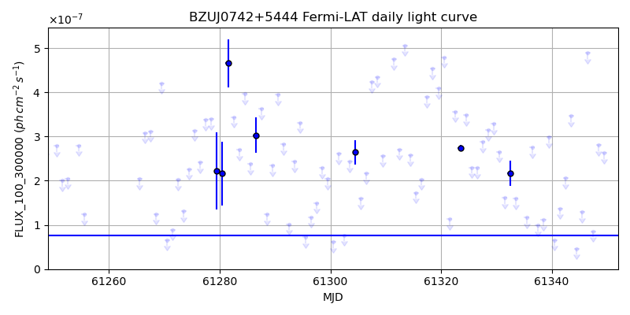
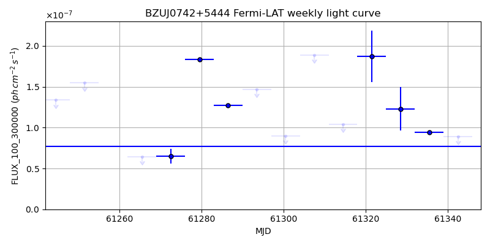
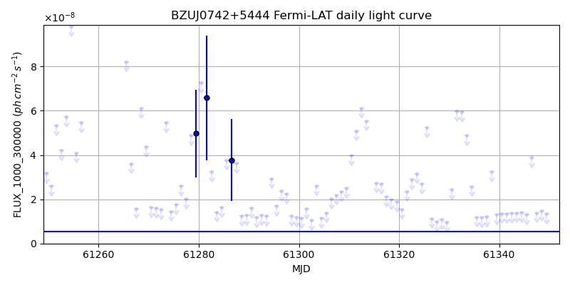
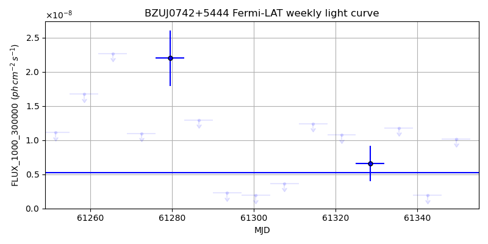

LAT Lightcurve site: https://fermi.gsfc.nasa.gov/ssc/data/access/lat/msl_lc/source/BZU_J0742p5444
NED: Query
Time of last update of this page: UT: 2026-11-13 16:19 (MJD: 61357.680)
| Property | Value |
|---|---|
| R.A. | 7:42:39.84 |
| Dec. | 54:44:24.0 |
| z | 0.720 |
| 3FGL SpectrumType | LogParabola |
| 3FGL PL Index | |
| 3FGL Flux_100_300000 | 7.70e-08 1 / (s cm2) |
| 3FGL Flux_1000_300000 | 5.28e-09 1 / (s cm2) |
| 3FGL Flux >200 GeV | 2.84e-12 1 / (s cm2) |
| 3FGL Extrap. Crab >200 GeV | 0.01 |
| 3FGL Flux After EBL Absorption >200GeV | 1.78e-13 1 / (s cm2) |
| 3FGL EBL Crab Fraction >200GeV | 0.00 |

| MJD | dMJD | Flux | dFlux | Frac3FGL | FracCrab>200GeV | EBLFracCrab>200GeV |
|---|---|---|---|---|---|---|
| 61348.50 | 0.50 | 2.81e-07 | 0.00e+00 | 0.00 | 0.00 | 0.00 |
| 61349.50 | 0.50 | 2.63e-07 | 0.00e+00 | 0.00 | 0.00 | 0.00 |
| 61350.50 | 0.50 | 4.27e-07 | 0.00e+00 | 0.00 | 0.00 | 0.00 |
| 61351.50 | 0.50 | 2.51e-07 | 0.00e+00 | 0.00 | 0.00 | 0.00 |
| 61352.50 | 0.50 | 2.58e-07 | 0.00e+00 | 0.00 | 0.00 | 0.00 |

| MJD | dMJD | Flux | dFlux | Frac3FGL | FracCrab>200GeV | EBLFracCrab>200GeV |
|---|---|---|---|---|---|---|
| 61321.50 | 3.50 | 1.87e-07 | 3.16e-08 | 2.43 | 0.03 | 0.00 |
| 61328.50 | 3.50 | 1.23e-07 | 2.67e-08 | 1.60 | 0.02 | 0.00 |
| 61335.50 | 3.50 | 9.42e-08 | 2.02e-09 | 1.22 | 0.01 | 0.00 |
| 61342.50 | 3.50 | 8.93e-08 | 0.00e+00 | 0.00 | 0.00 | 0.00 |
| 61349.50 | 3.50 | 1.11e-07 | 3.06e-09 | 1.44 | 0.02 | 0.00 |

| MJD | dMJD | Flux | dFlux | Frac3FGL | FracCrab>200GeV | EBLFracCrab>200GeV |
|---|---|---|---|---|---|---|
| 61348.50 | 0.50 | 1.46e-08 | 0.00e+00 | 0.00 | 0.00 | 0.00 |
| 61349.50 | 0.50 | 1.33e-08 | 0.00e+00 | 0.00 | 0.00 | 0.00 |
| 61350.50 | 0.50 | 3.59e-08 | 0.00e+00 | 0.00 | 0.00 | 0.00 |
| 61351.50 | 0.50 | 1.70e-08 | 0.00e+00 | 0.00 | 0.00 | 0.00 |
| 61352.50 | 0.50 | 5.65e-08 | 0.00e+00 | 0.00 | 0.00 | 0.00 |

| MJD | dMJD | Flux | dFlux | Frac3FGL | FracCrab>200GeV | EBLFracCrab>200GeV |
|---|---|---|---|---|---|---|
| 61321.50 | 3.50 | 1.08e-08 | 0.00e+00 | 0.00 | 0.00 | 0.00 |
| 61328.50 | 3.50 | 6.59e-09 | 2.57e-09 | 1.25 | 0.02 | 0.00 |
| 61335.50 | 3.50 | 1.18e-08 | 0.00e+00 | 0.00 | 0.00 | 0.00 |
| 61342.50 | 3.50 | 1.90e-09 | 0.00e+00 | 0.00 | 0.00 | 0.00 |
| 61349.50 | 3.50 | 1.02e-08 | 0.00e+00 | 0.00 | 0.00 | 0.00 |
--------------------------------------------------------- Using user-supplied coords: 7:42:39.84 54:44:24.0 2000 --------------------------------------------------------- FLWO UT night of: 2026-11-14 Local Sid. @ Midnight: 03:09 Sunset (-15.0) (local, UT): 18:35 01:35 Sunrise (-15.0) (local, UT): 05:42 12:42 Moonrise (local, UT): Moonset (local, UT): 20:50 03:50 Moon phase: 0.22 --------------------------------------------------------- AzTime LSID UT Obj_el Obj_az Mn_el Mn_az Sep. --------------------------------------------------------- 18:35 21:44 01:35 0.5 16.7 20.1 218.2 150.9 19:05 22:14 02:05 2.4 20.5 16.0 223.7 150.8 19:35 22:44 02:35 4.7 24.1 11.6 228.6 150.8 20:05 23:14 03:05 7.5 27.5 6.9 233.2 150.7 20:35 23:44 03:35 10.5 30.6 2.0 237.3 150.7 21:05 00:14 04:05 13.9 33.4 -2.2 241.2 150.7 21:35 00:44 04:35 17.5 35.8 -9.0 244.8 150.6 22:05 01:14 05:05 21.4 38.0 -14.6 248.2 150.6 22:35 01:44 05:35 25.4 39.8 -20.4 251.4 150.5 23:05 02:14 06:05 29.5 41.2 -26.2 254.5 150.5 23:35 02:44 06:35 33.8 42.2 -32.1 257.5 150.5 00:05 03:14 07:05 38.1 42.7 -38.1 260.6 150.4 00:35 03:45 07:35 42.5 42.7 -44.2 263.8 150.4 01:05 04:15 08:05 46.8 42.0 -50.2 267.1 150.4 01:35 04:45 08:35 51.0 40.4 -56.3 270.9 150.3 02:05 05:15 09:05 55.0 37.8 -62.4 275.3 150.3 02:35 05:45 09:35 58.8 33.7 -68.4 281.1 150.3 03:05 06:15 10:05 62.1 28.0 -74.2 289.9 150.3 03:35 06:45 10:35 64.7 20.3 -79.6 306.2 150.2 04:05 07:15 11:05 66.4 10.6 -83.2 343.5 150.2 04:35 07:45 11:35 67.0 359.7 -82.1 35.1 150.2 05:05 08:15 12:05 66.4 348.8 -77.4 61.2 150.2 05:35 08:45 12:35 64.6 339.2 -71.8 73.4 150.2 05:42 08:52 12:42 64.1 337.4 -70.5 75.2 150.2 --------------------------------------------------------- Dark hours >55 deg.: 3.61 srcstart (UT): 2026-11-14 09:04 srcend (UT): 2026-11-14 12:41